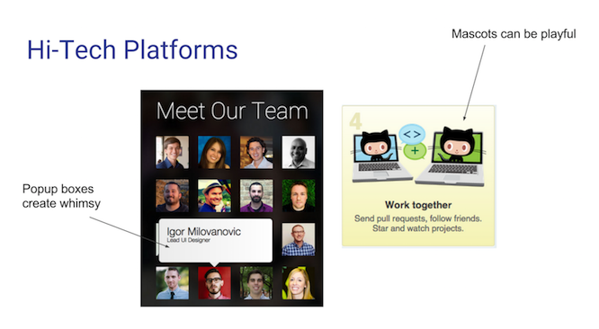
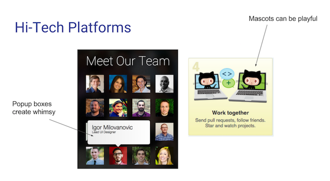
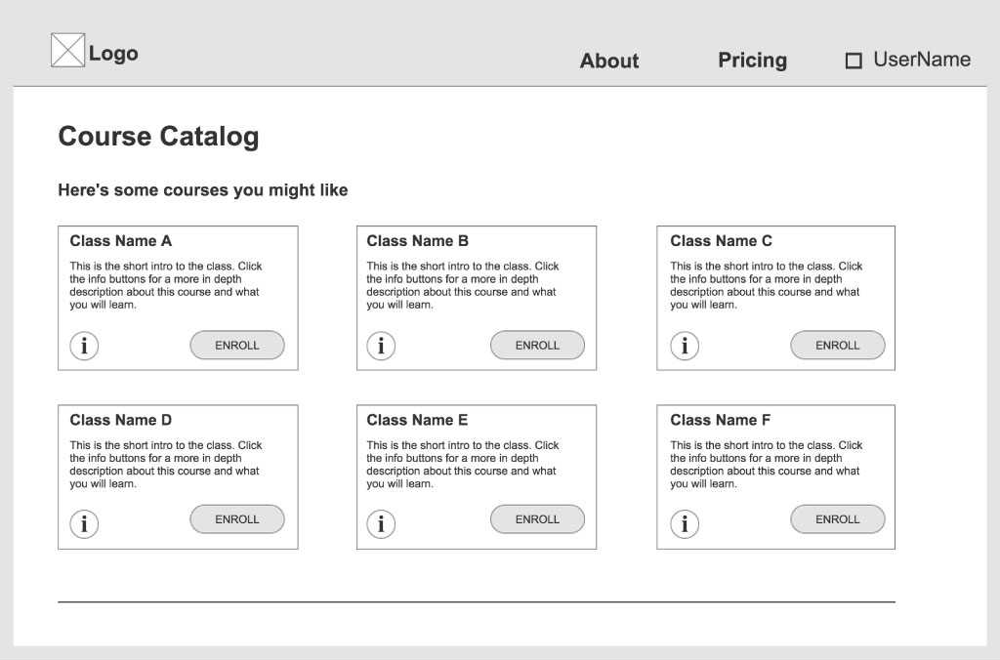

UX/UI Designer & PM
Hello, I'm Marlayne and I'm not afraid to roll up my sleeves for a worthy cause. As a creative communicator and visual designer, I enjoy transforming complex ideas into simple, functional, and visually pleasing experiences. With a degree in communications and a background in international project management, I know how to forge meaningful connections between user and product for different mediums. I believe the process is just as important as the end result.
I also believe good design incorporates inspiration from a wide range of interests. Besides building interfaces, I dabble in interior design, metalsmithing, gemology, and photography. I'm a big advocate of clean eating, minimalist living, and experiencing one new culture for each new year. If you'd like to collaborate, please get in touch.
Best Wishes,
Selected projects

Interaction Designer
Visual Competitive Analysis, Style Tiles,
High-Fidelity Comps, UI Kit

Insightful Decisions is a Chicago-based ed-tech startup that supports students to be the best version of themselves. Working in a team of three other designers, my role involved designing the style and interactions for a newly developed mobile app named IdealStudent within a 3 week timeframe. Design objectives met were customization, accountability, and engagement for high school students.
The UX team conducted user research and developed a prototype for the IdealStudent app, focused on helping students effectively and meaningfully plan their pathway through high school, be engaged in extracurricular activities, and prepare for college. It allows students to keep track of their daily tasks and be held accountable to stay on course.
The design process began with extensive research and visual analysis of 21 competitor apps within 4 categories: social, to do/task management, academic, and collaborative platforms. My team delved deep into understanding what apps teenagers routinely used and why. Utilizing InVision, Excel, and Keynote to display results on a spectrum, 3 design directions emerged to successfully create an engaging student interface: colorful, minimal, and techy.

View how I used InVision for visual analysis:

With design directions established, I moved forward with creating a moodboard and three distinct style tiles to present to the client.


After deciding on the look and feel of the interface, I created a UI Kit to design high-fidelity mockups in Sketch. After two rounds of iterations based on client feedback and preferences, I finalized all screens and delivered asset files.
Click here to interact with the final full InVision prototype

UI Designer
Branding, Visual Competitive Analysis,
Style Tiles, High-Fidelity Comps, UI Kit
June is a Chicago-based tech startup that is reinventing the hiring process for professionals in the technology industry. June aims to reward tech professionals to listen to recruiters’ job offers. Working in a team of two other designers, my role was to redesign external marketing pages, develop an internal dashboard page, and create logo concepts. Working with June's CEO and CTO on this redesign presented differing opinions which gave me the opportunity to design multiple versions of each page. Design goals met were improved usability and visibility with a whimsical, clean, and professional interface.
In the client kick-off, we discussed the origin of June and the symbolism behind it. The month of June shows higher than average new job growth and also represents summertime and renewal. With the goal of professionalism and a touch of whimsy in mind, I created the initial logo concept. By keeping the existing whimsical Arista typeface, I further played on the summertime concept by adding the ice cream bar, tagline, and cool green color palette. After client feedback, I presented a second option utilizing the client's navy blue color palette and updated tagline while adding a symbolic flying paper airplane which would be incorporated throughout my designs.
The design process began with extensive research and visual analysis of 18 competitor sites within 4 categories: traditional hiring, hi-tech, fashion forward, and whimsical platforms. My team focused on major competitors such as LinkedIn and Indeed to assess key visual takeways- both positive and negative. From there, I could start pulling together inspiration.
 

With a whimsical, clean, and professional interface in mind, I used Pinterest to create a moodboard and Photoshop/Sketch for style tile designs.
Check out my Pinterest moodboard for June:
Working off client approved aspects from both style tiles, I designed the UI Kit and mockups. Three iterations later, my design was finalized. Below is my Marvel prototype.
Click here to see the full-size version
Home Page
About Us
Pricing
Blog Version 1
Blog Version 2
Contact Us
Dashboard
UX/UI Designer
Competitive Analysis, User Personas, Sitemap, Wireframes/Prototypes, Style Tiles, High-Fidelity Comps
DESIGNATION Labs is a Chicago-based design bootcamp that trains individuals to be full-stack designers. Working within a team of two UI designers and one UX designer in an agile environment, we were given the challenge to reimagine and redesign the online learning experience. My role was cross-disciplinary: accomplishing both UX and UI tasks. Design objectives met were simplicity, practicality, and humanized interactivity for design-oriented adult learners.
Users seeking online learning are not gaining the necessary set of skills and knowledge to apply what they have learned to real-life situations. They need comprehensive lessons and projects available in one platform and feedback from professionals in those industries.
We began the research process by conducting a competitive analysis to explore the existing online learning landscape. We compared sites across multiple factors including subjects offered, content quality, price, and class type. Some key takeaways included:
Afterwards we formulated pertinent questions to ask our interviewees who had previously used an online learning platform. We needed to understand how users interacted as well as their joys and frustrations. We synthesized the answers through affinity mapping on post-it notes.
Affinity mapping allowed us to visualize user trends and patterns including:
We were able to create possible user flows, taxonomies, and a site map based on these personas.

From there, we sketched out paper wireframes for further user testing and team discussion. We posted them on whiteboards and attached colored labels to the most promising areas of each sketch, creating a heat map of desired components.
With new feedback, we were able to create interactive prototypes in Axure with additional usability testing and further iterations.
Check out our full Axure wireframe:
The challenge of visually designing a new online learning platform began with the branding. We explored multiple name options through word mapping and discovered an interesting concept about bees. We found bees are highly intelligent animals, who not only learn how to overcome obstacles by doing, but also actually learn by watching others as well. This learning notion mirrored the goal of our website and we decided on the name, Beo - the Old English word for bee. Once Beo was decided, I designed two distinct style tiles with logo exploration.
To give our client options, my team completed two contrasting high-fidelity mockups of key main screens, including the Landing page below. All screens followed our 3 design goals: simplicity, practicality, and humanized interactivity.
Click here to see the final full interactive Beo prototype
Landing Page Version 1

Landing Page Version 2